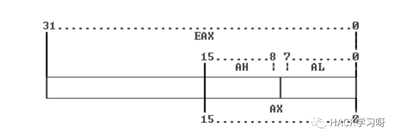
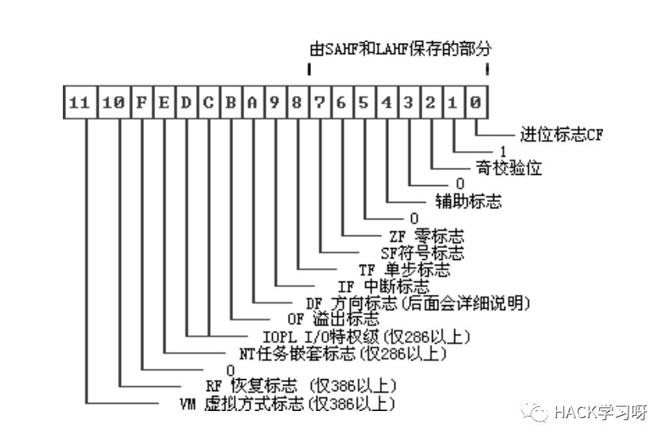

逆向工程——汇编基础[一]
什么是汇编
汇编语言是一种最接近计算机核心的编码语言。不同于任何高级语言，汇编语言几乎可以完全和机器语言一一对应。
汇编语言就是机器语言的一种可以被人读懂的形式，只不过它更容易记忆。
学习汇编语言，你需要
1。胆量。不要害怕去接触那些计算机内部工作机制。
2。知识。了解计算机常用的数制，特别是二进制、十六进制、八进制，以及计算机保存数据的方法。
3。开放。接受汇编语言与高级语言的差异，而不是去指责它如何的不好读。
4。经验。要求你拥有任意其他编程语言的一点点编程经验。
5。头脑。脑子是个好东西。
认识处理器
汇编语言被编译成机器语言之后，将有处理器（CPU）来执行。
典型处理器的主要任务
1。从内存中获取机器语言指令，译码，执行。
2。根据指令代码管理它自己的寄存器。
3。根据指令或自己的需要修改内存的内容。
4。响应其他硬件的中断请求。
寄存器
寄存器位于CPU中，可以保存特定长度的数据。某些寄存器中保存的数据对于系统的运行有特殊的意义。
寄存器可以被装入数据，你可以在不同寄存器之间移动这些数据，或者做类似的事情，如四则运算、位运算等操作。
通用寄存器的表示方法
80386上的通用寄存器

上图中，数字表示的是位。可以看出，EAX是一个32-bit寄存器。同时，它的低16-bit又可以通过AX这个名字来访问；AX又被分为高、低8-bit两部分，分别由AH和AL表示。
通用寄存器
以下是通用寄存器的名称和习惯用法。
EAX
EAX，32-bit，通用寄存器，相对于其他寄存器，在进行运算方面比较常用。在保护模式中，也可以作为内存偏移指针（此时，DS作为段寄存器或选择器）。
####EBXEBX，32-bit，通用寄存器。通常作为内存偏移指针使用（相对于EAX、ECX、EDX），DS是默认的段寄存器或选择器。在保护模式中，同样可以起这个作用。
####ECXECX，32-bit，通用寄存器，通常用于特定指令的计数。在保护模式中，也可以作为内存偏移指针（此时，DS作为寄存器或段选择器）。
####EDXEDX，32-bit，通用寄存器。在某些运算中作为EAX的溢出寄存器（例如乘、除）。在保护模式中，也可以作为内存偏移指针（此时，DS作为寄存器或段选择器）。
上述寄存器同EAX一样包括对应的16-bit 和8-bit分组
ESI
ESI，32-bit，通常在内存操作指令中作为源地址指针使用。当然，ESI可以被装入任意的数制，但通常没有人把它当做通用寄存器来用。DS作为寄存器或段选择器。
EDI
EDI，32-bit，通常在内存操作指令中作为目的地址指针使用。
EBP
EBP，32-bit，也是作为指针的寄存器。通常，它被高级语言编译器用以建造堆栈帧来保存函数或过程的局部变量。SS是它的默认段寄存器或选择器。
注意，这三个寄存器没有对应的8-bit分组。但可以通过SI、DI，BP分别访问他们的低16位。
段寄存器和选择器
实模式下的段寄存器到保护模式下，摇身一变就成了选择器。不同的是，实模式下的段选择器是16-bit的，而保护模式下的选择器是32-bit的。
CS 代码段
CS，代码段，或代码选择器。同IP寄存器一同指向当前正在执行的地址。处理器执行时从这个寄存器指向的段（实模式）或内存（保护模式）中获取指令。除了跳转或其他分支指令外，你无法修改这个寄存器的内容。
DS 数据段
DS，数据段，或数据选择器。这个寄存器的低16-bit连同ESI一同指向指令将要执行的内存。同时，所有的内存操作指令默认情况下都用它指定操作段（实模式）或内存（保护模式下作为选择器）。这个寄存器可被装入任意数值，做法是先把数据给AX，在把它从AX传送给DS。当然也可通过堆栈来做。
ES 附加段
ES，附加段，或附加选择器。这个寄存器的低16-bit连同EDI一同指向指令将要处理的内存。其他同DS。
FS
FS，F段或F选择器。可以用这个寄存器作为默认段寄存器或选择器的一个替代品。
GS
GS，G段或G选择器。它和FS几乎完全一样。
SS
SS，堆栈段或堆栈选择器。这个寄存器的低16-bit连同ESP一同指向下一次堆栈操作（push和pop）所要使用的堆栈地址。这个寄存器也可以被装入任意数值，可通过入栈和出站操作来赋值。
注意，一定不要在初学汇编阶段把这些寄存器弄混。段寄存器或选择器，在没有指定的情况下都是使用默认的那个。这句话在现在看来可能有点稀里糊涂，不过你很快会在后面知道如何去做。
特殊寄存器
EIP
EIP，32-bit，这个寄存器非常重要，同CS一同指向即将执行的那条指令的地址。不能够直接修改这个寄存器的值，修改它的唯一方法是跳转或分支指令。（CS是默认的段或选择器）
ESP
ESP，32-bit，这个寄存器指向堆栈中即将被操作的那个地址。尽管可以修改它的值，但并不提倡这样做，可能会破坏堆栈。（SS是默认的段或选择器）IP：Instruction Pointer，指令指针。SP：Stack Pointer，堆栈指针。
标志寄存器

其他寄存器
CR0、CR2、CR3（控制寄存器）。例如CR0的作用是切换实模式和保护模式。D0、D1、D2、D3、D6和D7（调试寄存器），他们可以作为调试器的硬件支持来设置条件断点。TR3、TR4、TR5、TR6、TR?寄存器（测试寄存器）用于某些条件测试。
##使用寄存器
对x86基本寄存器的认识，对于一个汇编语言编程人员来说是不可或缺的。
###汇编语言中的整数常量表示
####十进制整数
这是汇编器默认的数制。直接用我们熟悉的表示方式表示即可。例如，1234表示十进制的1234。不过，如果你指定了使用其他数制，或者有凡事都进行完整定义的习惯，也可以写成[十进制数]d或[十进制数]D在行式。
####十六进制数
这是汇编程序中最常用的数制。十六进制数表示为0[十六进制数]h或0[十六进制数]H，其中，如果十六进制数的第一位是数字，则开头的0可以省略，例如7fffh，0ffffh。
####二进制数
这也是一种常用的数制。二进制表示为[二进制数]b或[二进制数]B。一般程序中用二进制数表示掩码等数据非常的直观，但需要些很长的数据（4位二进制数相当于一位十六进制数）。例如，1010110b。
####八进制数
八进制数现在已经不是很常用了，一个典型的例子是Unix的文件属性。八进制数的形式是[八进制数]q、[八进制数]Q、[八进制数]o、[八进制数]O。例如，777Q。
调试器默认使用十六进制表示整数
###简单指令
下面介绍一些指令，在这之前，我们约定：
reg32，32-bit寄存器，如EAX、EBX等。
reg16，16-bit寄存器，如AX，BX等。
reg8？，8-bit寄存器，如AL，BH等。
imm32，32-bit立即数，可以理解为常数。
imm16，16-bit立即数。
imm8？8-bit立即数。
####MOV指令mov，要move的缩写，它可以将数据发送到寄存器中。
1 | mov reg32,(reg32 | imm8 | imm16 | imm32) |
mov eax,010h表示在EAX寄存器中载入00000010h。
####xchg指令
1 | xchg reg32,reg32 |
####递增（减）指令
1 | inc reg(8,16,32) |
####add指令
将寄存器的数值与另一寄存器或立即数的值相加，并存回此寄存器。
1 | add reg32,reg32/imm(8,16,32) |
####lea指令
目标地址传送指令：将一个近地址指针写入到指定的寄存器。
1 | lea reg16,mem16 |
其中，reg16必须是一个16位的通用寄存器，mem16必须是一个存储器。执行完这个指令后，就讲mem16所指的16位偏移地址传送到了reg16中。
MOV指令传送的是地址所指的内容，而LEA只是传地址
####rep、stos指令
REP指令的作用是重复上面的指令，ECX的值是重复次数。
STOS指令是将EAX中的值拷贝到一个目的地址中。
1 | lea edi,[ebp-0C0h] |
1.REP指令可以是任何字符串指令（CMPS、LODS、MOVS、SCAS、STOS）的前缀。
REP能够引发其后的字符串指令被重复，只要ECX的值不为0，重复就会继续。每一次字符串指令执行后，ECX的值都会减小。
2.STOS(store into string)意思是把EAX的内容拷贝到一个目的地址。
用法：stos dst，dst是一个目的地址，例如stos dword ptr es:[edi]。dword ptr（强制转换成dword格式）前缀是告诉stos，一次拷贝双字（4个字节）到目的地址。
####逻辑运算
逻辑运算指令qnrt包括AND, OR, XOR, TEST, NOT，逻辑运算的结果会影响到CF, PF, AF, ZF, OF标志位。
关于如何影响及哪些操作影响哪些标志位，请参考[Win32 汇编 - 逻辑运算指令: AND、OR、XOR、NOT、TEST][1]
[1]: http://blog.csdn.net/betabin/article/details/7306347 “Win32 汇编 - 逻辑运算指令: AND、OR、XOR、NOT、TEST”
####cmp指令
cmp（compare）指令比较两个操作数的大小，进行的运算是第一个操作数减去第二个操作数，但结果不会影响两个操作数的值，只会影响flag的CF、ZF、OF、AF、PF。
对各个flag的影响如下：
1 | 若执行指令后 |
参考来自：[[汇编cmp比较指令详解]][1]
[1]: http://laokaddk.blog.51cto.com/368606/284280/ “汇编cmp比较指令详解”
####跳转指令
跳转指令分三类：
无条件跳转：JMP
根据CX、ECX寄存器的值跳转：JCXZ（CX为0则跳转）、JECXZ（ECX为0则跳转）
根据EFLAGS寄存器的标志位跳转，列表如下：
1
2
3
4
5
6
7
8
9
10
11
12
13
14
15
16
17
18
19
20
21
22
23
24
25
26
27
28
29
30
31
32
33
34
35
36
37
38
39JE ;等于则跳转
JNE ;不等于则跳转
JZ ;为 0 则跳转
JNZ ;不为 0 则跳转
JS ;为负则跳转
JNS ;不为负则跳转
JC ;进位则跳转
JNC ;不进位则跳转
JO ;溢出则跳转
JNO ;不溢出则跳转
JA ;无符号大于则跳转
JNA ;无符号不大于则跳转
JAE ;无符号大于等于则跳转
JNAE ;无符号不大于等于则跳转
JG ;有符号大于则跳转
JNG ;有符号不大于则跳转
JGE ;有符号大于等于则跳转
JNGE ;有符号不大于等于则跳转
JB ;无符号小于则跳转
JNB ;无符号不小于则跳转
JBE ;无符号小于等于则跳转
JNBE ;无符号不小于等于则跳转
JL ;有符号小于则跳转
JNL ;有符号不小于则跳转
JLE ;有符号小于等于则跳转
JNLE ;有符号不小于等于则跳转
JP ;奇偶位置位则跳转
JNP ;奇偶位清除则跳转
JPE ;奇偶位相等则跳转
JPO ;奇偶位不等则跳转
###实模式与保护模式
为何要了解Intel 80386的保护模式和分段机制？首先，我们知道Intel 80386只有在进入保护模式后，才能充分发挥其强大的功能，提供更好的保护机制和更大的寻址空间，否则仅仅是一个快速的8086而已。没有一定的保护机 制，任何一个应用软件都可以任意访问所有的计算机资源，这样也就无从谈起操作系统设计了。且Intel 80386的分段机制一直存在，无法屏蔽或避免。其次，在我们的bootloader设计中，涉及到了从实模式到保护模式的处理，我们的操作系统功能（比 如分页机制）是建立在Intel 80386的保护模式上来设计的。如果我们不了解保护模式和分段机制，则我们面向Intel 80386体系结构的操作系统设计实际上是建立在一个空中楼阁之上。
####模式种类
从80386开始，cpu有三种工作方式：实模式，保护模式和虚拟8086模式。只有在刚刚启动的时候是real-mode，等到linux操作系统运行起来以后就运行在保护模式。
实模式只能访问地址在1M以下的内存称为常规内存，我们把地址在1M 以上的内存称为扩展内存。
在保护模式下，全部32条地址线有效，可寻址高达4G字节的物理地址空间;扩充的存储器分段管理机制和可选的存储器分页管理机制，不仅为存储器共享和保护提供了硬件支持，而且为实现虚拟存储器提供了硬件支持;支持多任务，能够快速地进行任务切换和保护任务环境;4个特权级和完善的特权检查机制，既能实现资源共享又能保证代码和数据的安全和保密及任务的隔离;支持虚拟8086方式，便于执行8086程序。
虚拟8086模式是运行在保护模式中的实模式，为了在32位保护模式下执行纯16位程序。它不是一个真正的CPU模式，还属于保护模式。
####模式区别
保护模式同实模式的根本区别是进程内存受保护与否 。可寻址空间的区别只是这一原因的果。
【实模式】将整个物理内存看成分段的区域,程序代码和数据位于不同区域，系统程序和用户程序没有区别对待，而且每一个指针都是指向”实在”的物理地址。这样一来，用户程序的一个指针如果指向了系统程序区域或其他用户程序区域，并改变了值，那么对于这个被修改的系统程序或用户程序，其后果就很可能是灾难性的。为了克服这种低劣的内存管理方式，处理器厂商开发出保护模式。
【保护模式】物理内存地址不能直接被程序访问，程序内部的地址（虚拟地址）要由操作系统转化为物理地址去访问，程序对此一无所知。至此，进程（这时我们可以称程序为进程了）有了严格的边界，任何其他进程根本没有办法访问不属于自己的物理内存区域，甚至在自己的虚拟地址范围内也不是可以任意访问的，因为有一些虚拟区域已经被放进一些公共系统运行库。这些区域也不能随便修改，若修改就会有: SIGSEGV（linux 段错误）;非法内存访问对话框（windows 对话框）。
【补充】保护模式下，有两个段表：GDT（Global Descriptor Table）和LDT（Local Descriptor Table），每一张段表可以包含8192 (2^13)个描述符[1]，因而最多可以同时存在2 * 2^13 = 2^14个段。虽然保护模式下可以有这么多段，逻辑地址空间看起来很大，但实际上段并不能扩展物理地址空间，很大程度上各个段的地址空间是相互重叠的。目 前所谓的64TB（2^(14+32)=2^46）逻辑地址空间是一个理论值，没有实际意义。在32位保护模式下，真正的物理空间仍然只有2^32字节那 么大。注：在ucore lab中只用到了GDT，没有用LDT。
####64位奔腾4处理器工作模式
事实上，现在的64位奔腾4处理器，拥有三种基本模式和一种扩展模式，
基本模式：
保护模式：纯32位保护执行环境。
实模式：纯16位无保护执行环境。
系统管理模式：当SMI引脚为有效进入系统管理模式，首先保存当前的CPU上下文。它有独立的地址空间，用来执行电源管理或系统安全方面的指令。扩展模式：
IA-32e模式，64位操作系统运行在该模式。
该模式有两种子模式:
1）兼容模式：该模式下，64位操作系统运行在32位兼容环境，能正常运行16，32位应用程序就像基本的保护模式一样，访问32位地址空间，但不能运行纯16位实模式程序（就是不能运行虚拟86模式程序了）。
2）64位模式：在该模式下，处理器完全执行64位指令，使用64位地址空间和64操作数，运行16，32位程序必须切换到兼容模式。
IA-32e子模式的切换完全基于代码段寄存器。这样一来，运行在IA-32e模式中（64位）的OS完全可以无缝的运行所有16，32，64为应用程序，通过设置32位后的CS。
##练习
把寄存器全部设置成0的状态，然后执行下面的代码：
1 | mov eax,0a1234h ;将十六进制数0a1234h送入eax |
##操作内存
我们可以将内存想象为一个顺序的字节流。操作内存是，首先需要的就是他的地址。
1 | mov ax,[0] |
方括号表示，里面的表达式指定的不是立即数，而是偏移量。在是模式中，DS:0中的那个字会被装入AX。
1 | mov [0],ax |
mov指令也可以把数据保存到内存中。
###描述内存宽度的操作符
| 操作符 | 意义 |
|---|---|
| byte ptr | 一个字节（8-bit，1 byte） |
| word ptr | 一个字（16-bit） |
| dword ptr | 一个双字（32-bit） |
例如，在DS:100h处保存1234h，以字存放：
1 | mov word ptr [100h],01234h |
于是，我们将mov指令扩展为：
1 | mov reg(8,16,32),mem(8,16,32) |
需要说明的是，加减同样也可以在[](取地址操作)中使用，例如：
1 | mov ax,[bx+10] |
###串操作
前面说到，内存可以和寄存器交换数据，也可以被赋予立即数。问题是，如果我们需要把内存的某部分内容复制到另一个地址，要怎么操作呢？
设想将DS:SI处的连续512字节内容复制到ES:DI（不考虑可能的重叠）：
1 | mov cx,512 ;循环次数 |
这是一种不太完美的解决方法，因为效率不好。
Intel的CPU的强项是串操作。所谓串操作就是由CPU去完成某一数量的重复的内存操作。需要说明的是，我们常用的KMP算法（用于匹配字符串的模式）的改进——Boyer算法，由于没有利用到串操作，因此在Intel的CPU上的效率并非最优。好的编译器往往可以利用Intel CPU的这一特性优化代码，然而，并非所有的时候他都能产生最好的代码。
某些指令可以加上REP前缀，这些指令通常被叫做串操作指令。
举例来说，STOSD指令将EAX的内容保存到ES:DI，同时在DI上加/减4；STOSB和STOSW分别作1字节或1字的操作，在DI上加/减的数是1或2。
在DI上是加还是减，取决于DF标志，如果DF被复位，则加；反之则减。
置位、复位的指令分别是STD、CLD。
除了REP，常用的前缀还包括REPNE、REPZ、REPE、REPNZ等。
| 操作码 | 指令 | 说明 |
|---|---|---|
| F3 6C | REP INS r/m8,DX | 将 (E)CX个字节从端口输入到ES:[(E)DI] |
| F3 6D | REP INS r/m16,DX | 将 (E)CX 个字从端口 DX 输入到 ES:[(E)DI] |
| F3 6D | REP INS r/m32,DX | 将 (E)CX 个双字从端口 DX 输入到 ES:[(E)DI] |
| F3 A4 | REP MOVS m8,m8 | 将 (E)CX 个字节从 DS:[(E)SI] 移到 ES:[(E)DI] |
| F3 A5 | REP MOVS m16,m16 | 将 (E)CX 个字从 DS:[(E)SI] 移到 ES:[(E)DI] |
| F3 A5 | REP MOVS m32,m32 | 将 (E)CX 个双字从 DS:[(E)SI] 移到 ES:[(E)DI] |
| F3 6E | REP OUTS DX,r/m8 | 将 (E)CX 个字节从 DS:[(E)SI] 输出到端口 DX |
| F3 6F | REP OUTS DX,r/m16 | 将 (E)CX 个字从 DS:[(E)SI] 输出到端口 DX |
| F3 6F | REP OUTS DX,r/m32 | 将 (E)CX 个双字从 DS:[(E)SI] 输出到端口 DX |
| F3 AC | REP LODS AL | 将 (E)CX 个字节从 DS:[(E)SI] 加载到 AL |
| F3 AD | REP LODS AX | 将 (E)CX 个字从 DS:[(E)SI] 加载到 AX |
| F3 AD | REP LODS EAX | 将 (E)CX 个双字从 DS:[(E)SI] 加载到 EAX |
| F3 AA | REP STOS m8 | 使用 AL 填写位于 ES:[(E)DI] 的 (E)CX 个字节 |
| F3 AB | REP STOS m16 | 使用 AX 填写位于 ES:[(E)DI] 的 (E)CX 个字 |
| F3 AB | REP STOS m32 | 使用 EAX 填写位于 ES:[(E)DI] 的 (E)CX 个双字 |
| F3 A6 | REPE CMPS m8,m8 | 在 ES:[(E)DI] 与 DS:[(E)SI] 中查找不匹配的字节 |
| F3 A7 | REPE CMPS m16,m16 | 在 ES:[(E)DI] 与 DS:[(E)SI] 中查找不匹配的字 |
| F3 A7 | REPE CMPS m32,m32 | 在 ES:[(E)DI] 与 DS:[(E)SI] 中查找不匹配的双字 |
| F3 AE | REPE SCAS m8 | 从 ES:[(E)DI] 开始查找非 AL 字节 |
| F3 AF | REPE SCAS m16 | 从 ES:[(E)DI] 开始查找非 AX 字 |
| F3 AF | REPE SCAS m32 | 从 ES:[(E)DI] 开始查找非 EAX 双字 |
| F2 A6 | REPNE CMPS m8,m8 | 在 ES:[(E)DI] 与 DS:[(E)SI] 中查找匹配字节 |
| F2 A7 | REPNE CMPS m16,m16 | 在 ES:[(E)DI] 与 DS:[(E)SI] 中查找匹配字 |
| F2 A7 | REPNE CMPS m32,m32 | 在 ES:[(E)DI] 与 DS:[(E)SI] 中查找匹配双字 |
| F2 AE | REPNE SCAS m8 | 从 ES:[(E)DI] 开始查找 AL |
| F2 AF | REPNE SCAS m16 | 从 ES:[(E)DI] 开始查找 AX |
| F2 AF | REPNE SCAS m32 | 从 ES:[(E)DI] 开始查找 EAX |
####说明：
按计数寄存器 ((E)CX) 中指定的次数重复执行字符串指令，或是重复到 ZF 标志不再满足指定的条件。REP（重复）、REPE（相等时重复）、REPNE（不相等时重复）、REPZ（为零时重复）及 REPNZ（不为零时重复）助记符都是可以添加到一些字符串指令中的前缀。REP 前缀可以添加到 INS、OUTS、MOVS、LODS 及 STOS 指令，REPE、REPNE、REPZ 及 REPNZ 前缀可以添加到 CMPS 与 SCAS 指令。（REPZ 与 REPNZ 前缀分别是 REPE 与 REPNE 前缀的同义形式）。同非字符串指令一起使用时，REP 前缀的行为未定义。
REP 前缀一次只能应用于一条字符串指令。要重复指令块，请使用 LOOP 指令或其它循环结构。
所有这些重复前缀都会使关联的指令重复执行，直到寄存器 (E)CX 中的计数递减到 0（请参阅下表）。（如果当前地址大小属性为 32，则将寄存器 ECX 用作计数器；如果大小属性为 16，则将 CX 寄存器用作计数器）。在每次迭代之后，REPE、REPNE、REPZ 及 REPNZ 前缀还会检查 ZF 标志的状态，如果 ZF 标志未处于指定的状态，则终止重复循环。同时测试两个终止条件时，终止重复的原因可以通过使用 JECXZ 指令来测试 (E)CX 寄存器进行确定，也可以通过使用 JZ、JNZ 及 JNE 指令来测试 ZF 标志进行确定。
| 重复前缀 | 终止条件1 | 终止条件2 |
|---|---|---|
| REP | ECX=0 | 无 |
| REPE/REPZ | ECX=0 | ZF=0 |
| REPNE/REPNZ | ECX=0 | ZF=1 |
使用 REPE/REPZ 与 REPNE/REPNZ 前缀时，由于 CMPS 与 SCAS 指令都会根据它们的比较结果设置 ZF 标志，因此 ZF 标志不需要初始化。
所以，我们可以把上面的程序改写为如下：
1 | cld ;复位DF |

参考文档来源：简明 x86 汇编语言教程
如有侵权，请联系删除